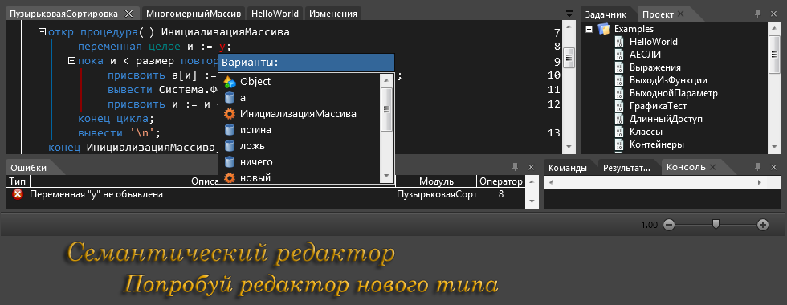

http://www.sem-tech.net/ru-ru/онас.aspx
Semantic IDE - это интерактивный самоучитель по программированию для людей, желающих самостоятельно освоить базовый уровень программирования, а также для учебных заведений и тренинговых площадок, желающих повысить качество учебного процесса.
Semantic IDE способен: распознать любые действия пользователя, дать исчерпывающие подсказки по любому действию, анализировать ошибки «на лету», обучать на родном языке пользователя, а главное - обучать, выдавать и проверять задания в автоматическом режиме (т.е. без «живого» учителя).
Самоучитель будет распространяться как веб-вервис с оплатой учебных курсов или сертификатов и как коробочный изделие для учебных заведений с подпиской.
Первые, еще не совсем ясные мысли о том, что интегрированная среда разработки должна иметь специализированный редактор, закрались еще тогда. Впервые возможность реализации подобного редактора возникла у В.В. Лаптева только на рубеже веков – уже в Астраханском ГТУ. Однако выполнение нескольких дипломных проектов на кафедре АСОИУ показало, что работа намного сложнее, чем представлялась. Необходимо было собирать команду.
К тому времени исследования сместились в направлении обучения программированию. В 2006 году на кафедру пришла работать Виктория Викторовна Толасова, которая стала очень активно исследовать методики обучения начинающих программистов. В 2009 студент 3 курса Дмитрий Грачёв заинтересовался этой темой и взялся за разработку редактора, который мы назвали семантическим. К тому времени методическая работа В.В. Толасовой показала, что нужно разработать и реализовать специальный обучающий язык с русскоязычной лексикой.
В сентябре 2012 года разработанную среду использовали на кафедре АСОИУ для обучения программированию студентов первого курса различных специальностей.
Стала очевидной необходимость разработки сайта для распространения среды

требуется .NET Framework 4.0 - версия 1.0.2.6, 28 марта 2014
http://www.sem-tech.net/ru-blog/post/2013/02/13/Что-умеет-Semantic-IDE
В SemanticIDE помимо синтаксиса Semantic Language реализованы С-подобный, Pascal-подобный и Python-подобный синтаксисы.
Русская нотация языка Semantic Language специально разработана для новичков, которым трудно одновременно изучать программирование и запоминать смысл английских слов.
С самого начала было понятно, что надо разрабатывать учебный язык программирования. Промышленные языки программирования и современные среды программирования плохо подходят для обучения начинающих программистов из-за большого количества специфических деталей, особенностей реализации и англоязычности. Опыт преподавателей, обучающих программированию школьников, однозначно свидетельствует, что начинающие воспринимают русские сооружения намного легче английских (Константин Поляков - http://kpolyakov.blogspot.ru). Поэтому изначально было решено, что наш учебный язык будет иметь русскую лексику.
Мы проанализировали большинство современных императивных языков программирования, и выделили небольшое типичное ядро, которое в том или ином виде присутствует практически во всех языках. Нами был разработан небольшой, но мощный обучающий язык программирования Semantic Language, и реализован интерпретатор в составе интегрированной среды SemanticIDE.
сооружения обучающего языка программирования не зависят от платформы реализации, и соответствуют принципам структурного программирования. Обучающий язык поддерживает процедурное, модульное и объектно-ориентированное программирование, и не поддерживает действия по умолчанию. Наш многолетний опыт преподавания показал, что начинающему программисту не следует полагаться на действия системы по умолчанию, а задавать все действия явно.
наша команда в настоящее время разрабатывает затея Справочной системы по программированию в SemanticIDE, и затея Задачник, в котором будет содержаться первоначальный набор заданий по программированию. Заметим, что в информационных файлах проекта наряду с действителями-комментариями при необходимости можно записать код программы-примера. Во-первых, подобным образом можно демонстрировать образцы хорошего стиля программирования. Во-вторых, этот пример можно запустить и выполнить, что способствует более быстрому и прочному усвоению изучаемой темы.
Отредактировано ВежливыйЛис (17.06.2016 13:08:35)


 Если в каждой теме обсуждать другие темы, то форум теряет структуру и становится помойкой. Данная тема посвящена конкретному продукту. Я, например, его скачал, посмотрел видео, узнал, что код закрыт, нашёл интересные идеи про обучение. А вы здесь _флудите_ по вопросу, который совершенно не связан. Я всё же призываю модератора удалить флуд. Для обсуждения терминологии тема должна быть своя, отдельная.
Если в каждой теме обсуждать другие темы, то форум теряет структуру и становится помойкой. Данная тема посвящена конкретному продукту. Я, например, его скачал, посмотрел видео, узнал, что код закрыт, нашёл интересные идеи про обучение. А вы здесь _флудите_ по вопросу, который совершенно не связан. Я всё же призываю модератора удалить флуд. Для обсуждения терминологии тема должна быть своя, отдельная.